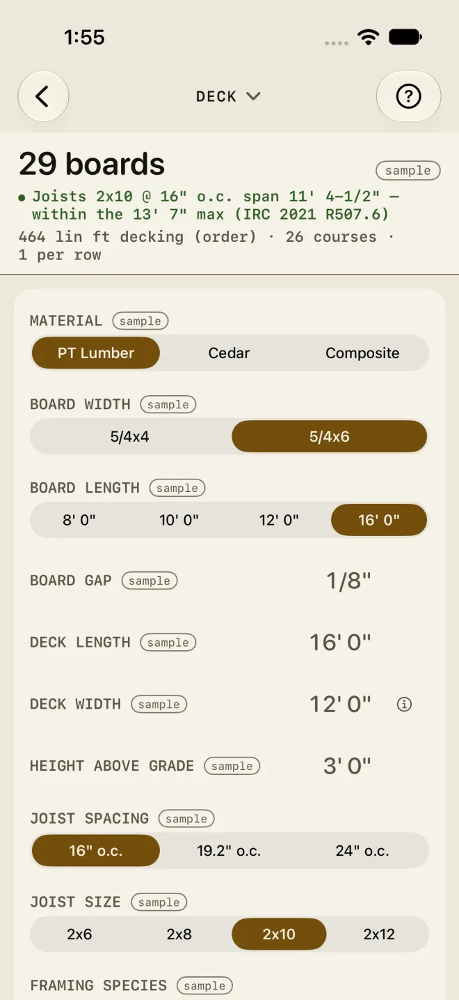
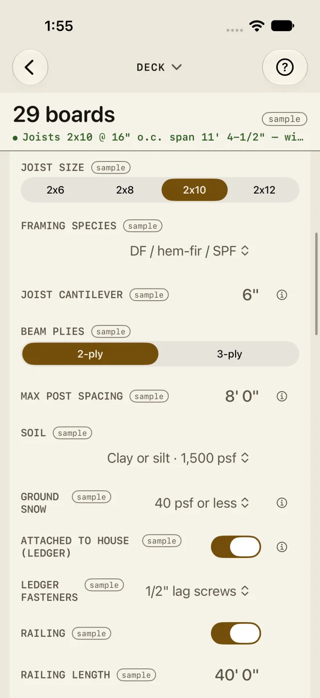

Deck
What it's for
Takes off a rectangular deck from the boards down: decking, joists, screws, posts, footing tubes, concrete, beam, ledger, ledger fasteners, hangers and railing. You get the order, three drawings — a framing plan, the beam line with its footings, and the decking layout with the rip on the last board — and a material list you can work as a cut list. It checks the frame against the deck tables of the 2021 IRC, Section R507: the joist span and cantilever, the beam between its posts, the footing size for your soil, and the ledger fastening. A check within its limit reads green; one over it reads in red capitals.
Step by step
The example is the screen as it opens: PT Lumber, 5/4x6 boards 16 ft long with a 1/8" gap, a deck 16' 0" by 12' 0" and 3' 0" above grade, 2x10 joists at 16" o.c. in DF / hem-fir / SPF, a 6" cantilever, a 2-ply beam with posts no more than 8' 0" apart, clay or silt soil, ground snow 40 psf or less, attached to the house with 1/2" lag screws, 40' 0" of railing, 10% waste.

1 2 3 4 5 6 7- Pick MATERIAL: PT Lumber, Cedar or Composite. The board widths and lengths on offer change with it. If the size you had picked is not stocked in the new material, the screen moves you to one that is.
- Pick BOARD WIDTH and BOARD LENGTH, the stock length you will buy.
- Enter BOARD GAP, the space you will leave between boards.
- Enter DECK LENGTH, along the house, and DECK WIDTH, out from the house: from the house wall behind the ledger (free-standing: the outside of the far rim) to the outside face of the rim. The decking runs the length. The joists run the width, less the ledger and the rim — on the example, 12' 0" wide gives a joist span of 11' 4-1/2" from the face of the ledger to the center of the beam.
- Enter HEIGHT ABOVE GRADE, from the ground to the top of the deck. It sets the post length in the material list.
- Pick JOIST SPACING (16", 19.2" or 24" o.c.) and JOIST SIZE (2x6 to 2x12). The size names the joist, beam and ledger rows, and the joist span is checked against it. The deck table prints 12″, 16″ and 24″ spacing only, so at 19.2″ the joist span says not checked.
- Pick FRAMING SPECIES, the lumber the joists and beam are cut from, No. 2 grade: Southern pine; DF / hem-fir / SPF (Douglas fir-larch, hem-fir, spruce-pine-fir); or Redwood / cedar (redwood, western cedars, ponderosa pine, red pine). Every deck table is printed by these three groups.

8 9 10 11 12 13 14 15- Enter JOIST CANTILEVER, how far the joists run past the center of the beam. The beam stands that far in from the outer edge. 0 puts the beam at the edge.
- Pick BEAM PLIES, 2 or 3 of the joist size nailed together.
- Enter MAX POST SPACING, the most you want between posts along a beam. The posts stand 6" in from each end of the beam and evenly between. On the example 8' 0" gives 3 posts 7' 6" apart. Close the posts up if the beam fails.
- Pick SOIL, the bearing the IRC lets you assume without a soils report (Table R401.4.1): clay or silt 1,500 psf, sand 2,000 psf, gravel or rock 3,000 psf. It sizes the footings. If you don't know, leave clay or silt — it is the lowest.
- Pick GROUND SNOW, the ground snow load your county gives. A deck is built for 40 psf of people or for the ground snow, whichever is more (IRC R507.1). At 40 psf or less the checks read the 40 psf rows of the deck tables; at 50, 60 or 70 psf they read that row. Over 70 psf is past the tables, and the checks say not checked.
- Leave ATTACHED TO HOUSE (LEDGER) on for a deck hung off the house. You get a ledger, its fasteners, joist hangers and one beam. Turn it off for a freestanding deck. The ledger and hangers drop out and you get two beams, with posts, footings and concrete for both.
- Pick LEDGER FASTENERS: 1/2" lag screws or 1/2" through-bolts through no more than 1/2" of sheathing, or 1/2" bolts through up to 1" of sheathing. The row shows only on an attached deck. It sets the fastener spacing and count.
- Leave RAILING on to buy railing. RAILING LENGTH opens on the run this deck implies — the three open sides of a deck attached to the house (two widths plus the length; the house side takes no rail), or the whole perimeter of a free-standing one — and follows the deck as you change its size. Type over it and your figure is used instead. The row is hidden when railing is off.
- Set WASTE FACTOR. It is added to the decking, joists, screws, concrete, beam and railing. Posts, footing tubes, ledger, ledger fasteners and hangers are exact counts.
Reading the results
![Deck scrolled to the results: 29 boards, 464 lin ft decking (order), 26 courses, 1 per row, 13 joists · 15 ordered, then five green rows — Joists 2x10 @ 16″ OC span 11' 4-1/2" — within the 13' 7" max (IRC 2021 R507.6); Cantilever 6" — within the 2' 10-1/8" max (IRC 2021 R507.6); Beam (2) 2x10 spans 7' 6" — within the ≈ 8' 6-1/16" max (IRC 2021 R507.5); Footings 18" round — ≈ 17" needed for ≈ 46 sq ft a post on 1,500 psf soil (IRC R507.3.1); Ledger: 1/2" lags @ 15" OC, staggered (IRC R507.9.1.3) — then the BASIS & WHAT WAS ASSUMED row and the top of the framing plan, 3 POSTS @ ≤8' 0" O.C.](../shots/deck--more.webp) 16
17
18
19
20
16
17
18
19
20
- The headline is decking boards to buy at your stock length, waste included. On the defaults: 29 boards.
- Decking line. On the defaults: 464 lin ft decking (order) · 26 courses · 1 per row. Courses is the number of boards across the deck width, at board width plus gap. Per row is how many stock lengths it takes to cross the deck length. More than one means butt joints. Joists: 13 joists · 15 ordered — the first number is what you lay out and hang, the second the order, with waste.
- The deck code checks, one row each, the section named at the end. On the defaults all five are within their limits: Joists 2x10 @ 16" o.c. span 11' 4-1/2" — within the 13' 7" max (IRC 2021 R507.6) — the joist span runs from the face of the ledger (on a freestanding deck, from the other beam) to the center of the beam; Cantilever 6" — within the 2' 10-1/8" max (IRC 2021 R507.6); Beam (2) 2x10 spans 7' 6" — within the ≈ 8' 6-1/16" max (IRC 2021 R507.5) — post to post; Footings 18" round — ≈ 17" needed for ≈ 46 sq ft a post on 1,500 psf soil (IRC R507.3.1) — the deck area the busiest post carries, and the tube the list buys; Ledger: 1/2" lags @ 15" OC, staggered (IRC R507.9.1.3). A failed check reads in red capitals and says what it is over, for example JOISTS 2X8 @ 16" O.C. SPAN 11' 4-1/2" — OVER THE 11' 1" MAX (IRC R507.6). The strip at the top shows the first failure while you scroll. A case the tables do not reach reads as a plain not checked line instead of a guess.
- BASIS & WHAT WAS ASSUMED opens to the load (40 psf live plus 10 psf dead, or the ground snow you picked plus 10 psf dead), the species and grade, where each width and span is measured, how the footing is sized and rounded up to a stock tube (12" least), and what is not checked: the posts, the decking spacing and the lateral ties. The cut sheet prints the same load basis and soil beside the checks.
 21
22
21
22
- DECK FRAMING is the plan: ledger, joists, beam and posts, with the deck dimensioned and a footing detail marked VERIFY FROST. Pinch to zoom, drag to pan, double-tap to reset, and use the expand button for full screen. See Drawings.
- DECK BEAM LINE is an elevation along the beam and a section at a post. It dimensions the post centers along the beam, the height above grade and the footing depth, and draws the beam where the cantilever puts it. Its notes give where the end footings sit, the tube size, and SPANS: SEE THE IRC R507 CHECKS.
- DECKING LAYOUT shows every course over the joists, with running dimensions from the house side. The corner detail gives the last board. On the defaults the course module is 5-5/8" and the last board is a 3-3/8" RIP. The notes spell out the module, 5-1/2" + 1/8" GAP, and whether there are butt joints.
- MATERIALS. Each row carries its own note after the dash. On the defaults: joists 12' each; screws 350/box — 2 per joist crossing (+ splices); 6x6 posts 4' each — 3 per beam @ 7' 6" o.c.; footing tubes 18" — 48" — verify local frost depth; concrete 60-lb, ~16/footing + waste; beam outer beam, 2 plies. An attached deck adds the ledger, marked flashed (IRC R703.4), its lag screws or bolts at the table's spacing, and one hanger per joist.
- The buttons are at the very bottom. CUT SHEET shares a PDF of the drawing, inputs, the code checks and materials, and the list icon at its right end shares the material list alone. SAVE keeps the result in History. CUT LIST puts the material list on the Lock Screen as a cut list to work through. SEND LIST shares the list as a page someone else can open and tick off on their own phone, with no app.
Common mistakes
- Swapping length and width. DECK LENGTH is along the house and sets the joist count, the beam and the ledger. DECK WIDTH is out from the house, measured to the outside of the rim — not the joist length, which is shorter by the ledger and the rim. Check the framing plan: the joists should run the way you mean to frame them.
- Leaving FRAMING SPECIES on the wrong group. Ask the yard what the treated framing is. Southern pine spans a little farther than DF / hem-fir / SPF in most sizes, so a deck that passes in one group can fail in the other.
- Leaving GROUND SNOW at 40 psf or less in snow country. Every green row is judged at the load you pick; look up your county's ground snow before you trust them.
- Reading a pass as a permit. The checks cover the joists, beam, footings and ledger at the load you pick. They do not check the posts, decking spacing, lateral ties, guards or stairs, or a ground snow load over 70 psf. Your building department has the last word.
- Finding a thin rip at the last board on the day. Read the corner detail on the decking layout before you start. If the rip is too narrow to fasten, change BOARD GAP a little and watch it move.
- Ordering 48" footing tubes where frost is deeper. The footing tube and concrete rows are figured on a 48" deep tube, and the tube row says to verify local frost depth. The post row is height above grade plus a foot, rounded up to even-foot stock. It does not change with frost depth, because the posts stand on the footings.
- Entering the deck perimeter as RAILING LENGTH on an attached deck. The house side has no rail, and the row already opens on the three open sides. Type over it only when the job differs — a returned rail, a stair opening, a gate.
Related
- Floor Joist — interior floor joists (a different span table)
- Beam Sizing
- Stairs — the stair off the deck
- Baluster Spacing — the railing infill
- Concrete — footings by volume, as a column pour
- Drawings
- Cut sheets and templates
- Cut list, Lock Screen and widgets
- Saving and history